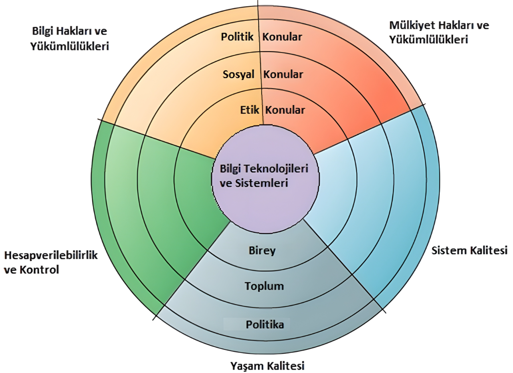

Bu uygulama, bilişim sistemlerinde etik ve sosyal konuları anlamanızı ve sınavlara hazırlanmanızı kolaylaştırmak için tasarlanmıştır. Yukarıdaki menüden ilgili bölümlere geçiş yapabilirsiniz.
Eşleştirme Oyunu: Etik dalga modeli ve ahlaki boyutları eşleştirerek bilginizi test edin. (Etkileşimli Aktiviteler sekmesinde)
Kısa Test: Çoktan seçmeli sorularla kendinizi sınayın. (Etkileşimli Aktiviteler sekmesinde)
Eşleştirme Oyunu: Etik Dalga ve Boyutlar
Aşağıdaki kavramları doğru başlıklarla eşleştirin.
Kavramlar (Sürükleyin)
Kısa Test
Etik ve sosyal konular hakkındaki bilginizi test edin.
Etik Nedir?
Etik: Kişilerin davranışlarına yön veren, doğru ve yanlış olarak adlandırılan prensipler; neyin doğru neyin yanlış olduğunu sorgulayan ahlak felsefesi.
İş Etiği: Etiğin iş dünyasındaki faaliyetlere (üretim, pazarlama, satış vb.) uygulanması.
İş Etiği
İş dünyasında etik, üretimden pazarlamaya, satıştan insan kaynaklarına kadar tüm süreçlerde doğru ve adil davranışları esas alır.
Etik, Sosyal ve Politik Sorunlar Arasındaki İlişki
Yeni bilgi teknolojileri (BT), toplumun mevcut dengesini bozan bir "taş" etkisi yaratır.
Bu "taş", etik ikilemleri tetikler.
Bu etik ikilemler, sosyal tartışmalara (sosyal sorunlar) yol açar.
Sonuç olarak, politik düzenleme ve yasalara (politik sorunlar) ihtiyaç duyulur.

Etik-Sosyal-Politik Dalga Modeli
Bilgi Toplumunun Beş Temel Ahlaki Boyutu
Bilgi Hakkı ve Yükümlülükleri: Kişisel bilgilerin toplanması, saklanması, kullanılması ve gizliliği ile ilgili haklar ve sorumluluklar.
Mülkiyet Hakları ve Yükümlülükleri: Yaratıcı eserlerin (yazılım, müzik, icat vb.) sahipliği ve dijital ortamda korunması.
Hesap Verebilirlik ve Kontrol: Bilgi sistemlerinin neden olduğu zararlardan kimin sorumlu tutulacağı ve kontrol mekanizmaları.
Sistem Kalitesi: Veri doğruluğu, sistem güvenliği ve güvenilirliği için gerekli standartlar; toplumsal güvenlik ve kişisel hakların korunması.
Yaşam Kalitesi: Bilişim sistemlerinin birey ve toplum üzerindeki etkileri (mahremiyet, sosyal değerler, sağlık, eşitlik vb. konuların korunması).
Bilgi Hakları ve Yükümlülükleri
Gizlilik: Bireyin gözetimden uzak olma ve kişisel bilgilerinin izinsiz bilinmemesi, kullanılmaması isteği. Çerezler, web böcekleri, casus yazılımlar: Kişisel verilerin izinsiz toplanmasında kullanılan başlıca araçlar. Gizlilik politikası modelleri: Opt-in ve Opt-out yaklaşımları.
Opt-in Modeli: Kullanıcıların kişisel bilgilerinin toplanması veya kullanılması için önceden açıkça onay vermelerini gerektiren bir yaklaşımdır. Yani, kullanıcılar varsayılan olarak "hariç tutulur" ve katılmak için aktif bir eylemde bulunmaları gerekir.
Opt-out Modeli: Kullanıcıların kişisel bilgilerinin toplanmasına veya kullanılmasına otomatik olarak dahil edildiği, ancak istedikleri takdirde bu durumdan "vazgeçme" veya "ayrılma" seçeneğine sahip oldukları bir yaklaşımdır. Yani, kullanıcılar varsayılan olarak "dahil edilir" ve çıkmak için aktif bir eylemde bulunmaları gerekir.
Mülkiyet Hakları ve Yükümlülükleri
Fikri Mülkiyet: Zihinsel çabayla yaratılan somut olmayan varlıklar (yazılım, kitap, müzik vb.). Koruma türleri: Ticari sır, telif hakkı, patent. Zorluklar: Dijital ortamda eserlerin kolayca kopyalanıp dağıtılması.
Hesap Verebilirlik ve Kontrol
Sorumluluğun Belirlenmesi: Sistem hatalarında sorumlunun kim olduğu. Sistem sorunlarının kaynakları: Hatalar, donanım eksikliği, zayıf veri kalitesi. Temel kabul: %100 hatasız yazılım mümkün değildir.
Sistem Kalitesi
Toplumsal güvenlik ve kişisel hakların korunması için sistem, veri standartları ve kalitesi önemlidir.
Yaşam Kalitesi
1. Sınırların Buharlaşması
Bilişim teknolojileri, "her şeyi her yerde yapabilirsin" yaklaşımıyla geleneksel sınırları ve ilişkileri zedelemektedir:
İş ve özel hayat arasındaki çizgi belirsizleşiyor
7/24 ulaşılabilir olma baskısı
Dinlenme zamanlarının bile bilgisayar başında geçirilmesi
Yüz yüze sosyal ilişkilerin azalması
2. Bağımlılık ve Savunmasızlık
Kurumların ve bireylerin bilişim sistemlerine aşırı bağımlı hale gelmesi ciddi riskler doğurmaktadır:
Sistem arızalarında iş süreçlerinin tamamen durması
Siber saldırılara karşı artan kırılganlık
Teknolojik altyapıya bağımlı yaşam tarzı
Sistem hatalarında büyük maddi ve manevi kayıplar
3. İstihdam ve Yeniden Yapılandırma
BT ile iş süreçlerinin otomasyonu, istihdam yapısını derinden etkilemektedir:
Rutin işleri yapan çalışanların işsiz kalma riski
Alt ve orta düzey pozisyonların azalması
Yeni becerilere sahip olmayan çalışanların dezavantajlı duruma düşmesi
Sosyal ve ekonomik eşitsizliklerin artması
4. Sayısal Uçurum (Digital Divide)
Teknolojiye erişim ve kullanım becerilerindeki eşitsizlik, toplumsal bir soruna dönüşmektedir:
Kırsal kesim, yaşlılar ve düşük gelirli grupların dezavantajlı durumu
Eğitim ve iş fırsatlarına erişimde eşitsizlik
Sağlık ve kamu hizmetlerine erişimde zorluklar
Toplumsal katılım ve temsilde eksiklik
5. Sağlık Riskleri
Teknostres (Technostress)
Modern çağın en yaygın stres kaynaklarından biri olan teknostres, şu belirtilerle kendini gösterir:
Sürekli bağlantıda olma zorunluluğundan kaynaklanan anksiyete
Teknolojik değişimlere ayak uydurma baskısı
Bilgi bombardımanı kaynaklı zihinsel yorgunluk
Sabırsızlık ve saldırganlık eğilimi
İş-yaşam dengesi bozukluğu
Tükenmişlik sendromu
Fiziksel Sağlık Sorunları
RSI (Tekrarlayan Zorlanma Rahatsızlığı):
Sürekli aynı hareketlerin tekrarlanması sonucu kas ve sinir hasarı
Özellikle el, bilek ve omuz bölgesinde ağrı
Uzun süreli klavye ve fare kullanımının sonucu
CTS (Karpal Tünel Sendromu):
Bilekteki sinirin sıkışması
El ve parmaklarda uyuşma, karıncalanma
Klavye kullanımıyla ilişkili
CVS (Bilgisayar Görme Bozukluğu):
Uzun süre ekrana bakmaktan kaynaklanan göz yorgunluğu
Baş ağrısı ve görme bulanıklığı
Göz kuruluğu ve yanma hissi
Önemli Skandallar
Enron Skandalı: Muhasebe hileleri ile şirketin finansal durumunun olduğundan iyi gösterilmesi sonucu iflas.
WorldCom Skandalı: Yasa dışı muhasebe yöntemleriyle gelirlerin şişirilmesi sonucu büyük bir iflas.
Bu skandallar, bilgi sistemlerinin sahtecilik aracı olarak nasıl kullanılabileceğini gösterir.
Bilgi Toplumunda Etik
Sorumluluk: Verilen kararların olası maliyetleri, zorunluluk ve görevlerin kabulü. Hesap Verebilirlik: Bir hareketin sorumluluğunun kime ait olduğunun belirlenmesi. Yükümlülük: Zarar halinde zararın kim tarafından karşılanacağının bilinmesi.